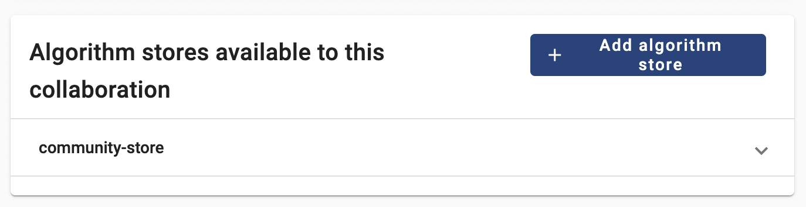
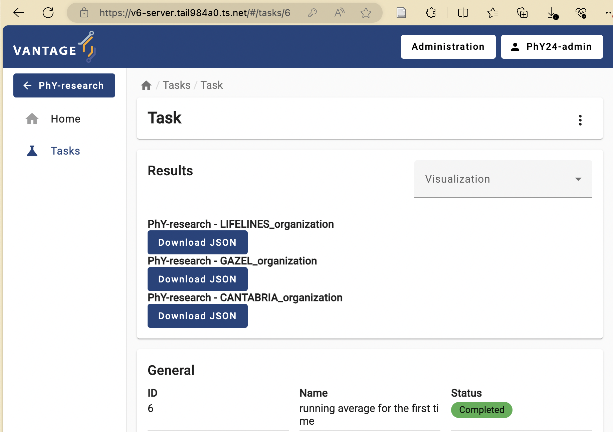

Content from Introduction to privacy enhancing technologies (PET)
Last updated on 2024-06-04 | Edit this page
Estimated time: 12 minutes
Overview
Questions
- TODO
Objectives
- Understand PET, FL, MPC, homomorphic encryption, differential privacy
- Understand how different PET techniques relate
- Understand scenarios where PET could be applied
- Understand horizontal vs vertical partitioning
- Decompose a simple analysis in a federated way
- Understand that there is paperwork to be done (DPIA etc.)
Problem statement
The amount of data being generated nowadays is absolutely mind-boggling. This data can be a valuable resource for researchers. However, personal data should be handled with great care and responsibility because of its sensitive nature. This is why there are privacy regulations in place like GDPR to prohibit easy access to this wealth of data.
However, often researchers are not interested in the personal records that make up the data, but rather in the insights derived from it. This raises an intriguing question: Can we unlock these valuable insights in a manner that upholds and respects privacy standards?
In classic data analysis, all data is copied over into a single place. This makes it very easy to use conventional data analysis software and tools to gain insights.

Unfortunately this way of working does not respect the privacy of the people contained within the dataset. All their personal details end up at another party.
You might think of multiple issues. Some examples:
- The original data owner loses control of the data
- Results in multiple versions of the data
- What to do when the data needs to be updated?
- If there was consent in the first place, how can you retract consent?
Data anonymization and pseudonymization
The first step in the process is often data anonymization. Personal identifiable information will in this case be removed so that individuals stay anonymous. Data pseudonimization is a similar process, but in this case, the records will be assigned an id that will make it possible to link individuals across datasets.

While data anonymization and pseudonymization are often a good first step, there is no guarantee that the data will never be reidentified. A famous example of reidentification is the story of the Netflix prize. The Netflix prize was an open competition to build the best recommender system to predict user ratings for films based on previous ratings. The data was anonymized, but in 2007 two researchers from The University of Texas at Austin were able to identify a large number of users by matching the dataset with film ratings on the Internet Movie Database (IMDB).
Federated data analysis
There are different ways in which privacy risks can be mitigated. We will focus on the idea of federated analysis. In a federated setting, the data with the data owner, who keeps full control over it. In this case, it is not the data that travels, but the analysis itself. The system sends a query or instruction to the data and only the results will get back to the user. The results are often akin to a form of aggregation of the data. This can be in the shape of traditional statistics like the mean, or it can be more intricate like a machine learning model.
Aggregating the data does not ensure complete protection of person-level information, but it certainly makes it less likely that this will happen.
TODO: Example of data leakage in simple aggregated case
Federated learning
The term federated learning was introduced in 2016 by researchers at Google (McMahan et al.) and refers to a “loose federation of participating devices (which we refer to as clients) which are coordinated by a central server.” In traditional federated learning, the clients train machine learning models, and only the updates of the models are sent back to the central server. The central server combines the updates from all the individual clients into one final machine learning model.
There are caveats to using this type of data analysis though. Although the data transmitted from the clients to the server are an aggregation of the raw data, researchers have found a way to use this data to reconstruct the original data. This vulnerability is called gradient leakage.

Secure Multiparty Computation
There are different solutions to prevent the reconstruction of raw
data. One solution is to make sure that no party other than the data
owner is actually able to see the intermediate data. One branch of
techniques that can be used for this is Secure Multiparty Computation
(MPC). With MPC,
computations are performed collaboratively by multiple parties. Data is
encrypted in such a way that other parties cannot see the original
values, but values of multiple parties can still be combined (
e.g. added or multiplied). A classic technique from the field of MPC is
secret sharing. With this technique data is encrypted, after which
pieces of the encryption are sent to the other parties. No single party
will be able to reconstruct the original value. Only when all parties
work together, the original value can be retrieved.
When combining multiple values using secret sharing, this will result in the parties owning new puzzle pieces that when put together will reveal the result of the computation.
Secret sharing, an example
Mees, Sara and Noor want to know how much they weigh in total. Mees weighs 43 kg, Sara weighs 39, Noor weighs 45. They create secret shares for their weights that they give to their peers.
| Mees receives | Sara receives | Noor receives | Sum | |
|---|---|---|---|---|
| Mees generates: | -11 | 50 | 4 | 43 |
| Sara generates: | -12 | 17 | 34 | 39 |
| Noor generates: | -19 | -38 | 64 | 45 |
They sum their shares:
| Mees | -4 |
| Sara | 29 |
| Noor | 102 |
They add their sums together: -4 + 29 + 102 = 127 In this way, they have aggregated their data without sharing their individual data with anyone else.
TODO: Exercise with secret sharing where data is leaked.
Differential privacy
As mentioned before, aggregation of data will not always prevent leaks of sensitive information. Consider the example of Mees, Sara and Noor. We know their total weight is 127 kg. If Sara and Noor get together and subtract their weights off of the total, they will be able to infer how much Mees weighs.
An aggregation is differentially private when someone cannot infer whether a particular individual was used in the computation. A way to make a result more differentially private is to replace a selection of inputs with random noise. A single individual will then always be able to deny that their data has contributed to the final result. An individual has plausible deniability with regards to whether it was part of the dataset.
Blocks upon blocks
The previously mentioned techniques are not used in isolation, but are usually stacked on top of eachother to mitigate the privacy risks that are relevant within a certain usecase. Typically, the process begins by anonymizing or pseudonymizing the data. With vantage6, the data is then placed in a federated setting. You can use the existing algorithms available for vantage6, which often incorporate various privacy-enhancing techniques.
Data partitioning
Data sharing challenges come in many different shapes and sizes, but in the end, the goal of the researchers is often to analyze data as if it were available in one big table in one place. There are 2 main ways in which the dataset can be separated over different sources: horizontal and vertical partioning. In horizontal partitioning, this giant table has been snipped in pieces by making horizontal cuts. The result is that information of an individual record will stay in one place, but the records themselves have been scattered around in different locations.
In vertical partitioning, the cuts have been made vertically. Columns have now been divided over different locations. This type of partitioning is usually more challenging because often a way needs to be found to link identities across datasources. Vertical partitioning requires different types of privacy enhancing algorithms than horizontal partitioning.
In reality, data can be horizontally and vertically partitioned at the same time. It might be necessary to combine multiple techniques in order to overcome your problems.
Technology doesn’t solve everything
You have now learned about various technologies for analyzing data while preserving privacy of individuals. However, it should be emphasized that these technologies do not solve all your data sharing problems. Rather, they are only a small piece of the puzzle. In research projects involving privacy enhancing technologies, a lot of work goes into complying with regulations and building trust.
Since these projects have a risk of affecting the privacy of individuals, a Data Protection Impact Assessment (DPIA) is usually required. This is a process that will help identify and minimize privacy risks of a project and is required by GDPR.
Apart from procedures required by GDPR there might be other regulations in place enforced by the owners of the data (e.g. hospitals). The specific situation of a project can affect the way in which the data is allowed to be processed. Some privacy enhancing technologies might be allowed in one project but prohibited in another. It is always important to stay transparent about privacy risks of the technologies you intend to use.
Content from vantage6 basics
Last updated on 2024-06-04 | Edit this page
Overview
Questions
- Why to use vantage6?
- How does vantage6 work?
- How do federated algorithms run in vantage6?
- What will be available in vantage6 in the future?
Objectives
- List the high-level infrastructure components of vantage6 (server, client, node)
- Understand the added value of vantage6
- Understand that there are different actors in the vantage6 network
- Understand that the vantage6 server does not run algorithms
- Explain how a simple analysis runs on vantage6
- Understand the future of vantage6 (policies, etc.)
Unique selling points of vantage6
vantage6 is a platform to execute privacy enhancing techniques (PETs). Several alternative platforms for PETS are available, but vantage6 provides some unique features:
- Open source.
- Container orchestration for privacy enhancing techniques.
- Easily extensible to different types of data sources.
- Algorithms can be developed in any language.
- Other applications can connect to vantage6 using the API.
- Managing and enforcing collaboration policies
- Minimal network requirements at data stations
The vantage6 infrastructure
In vantage6, a client can pose a question to the central server. Each organization with sensitive data contributes one node to the network. The nodes collect the computation request from the server and fetches the algorithm to answer it. When the algorithm completes, the node sends the aggregated results back to the server.

On a technical level, vantage6 may be seen as a container orchestration tool for privacy preserving analyses. It deploys a network of containerized applications that together ensure insights can be exchanged without sharing record-level data.
Lets explain in some more detail what these network actors are responsible for, and which subcomponents they contain.
Server
The A (central) server that acts as communication hub between clients and nodes. The server tracks the status of the computation requests and handles administrative functions such as authentication and authorization.It consists of multiple applications:
Vantage6 server: Contains the users, organizations, collaborations, tasks and their results. It handles authentication and authorization to the system and acts as the communication hub for clients and nodes.
Docker registry: Contains algorithms stored in images which can be used by clients to request a computation. The node will retrieve the algorithm from this registry and execute it. It is possible to use public registries for this purpose like Docker hub or Github Containers. However it is also possible to host your own registry, for example a Harbor instance.
Algorithm store: Is intended to be used as a repository for trusted algorithms within a certain project. Algorithm stores can be coupled to specific collaborations or to all collaborations on a given server.
EduVPN instance: If algorithms need to be able to engage in peer-to-peer communication, a VPN server can be set up to help them do so.
RabbitMQ: Is used to synchronize the messages between multiple vantage6 server instances.
Data Station
The data station hosts the node (vantage6-node), that have access to the local data and execute algorithms, and a database.
Vantage6 node: The node is responsible for executing the algorithms on the local data. It protects the data by allowing only specified algorithms to be executed after verifying their origin. The node is responsible for picking up the task, executing the algorithm and sending the results back to the server. The node needs access to local data. For more details see the technical documentation of the node.
Database: The database may be in any format that the algorithms relevant to your use case support. The currently supported database types are listed here.
Client
A user or application who interacts with the vantage6-server. They create tasks, retrieve their results, or manage entities at the server (i.e. creating or editing users, organizations and collaborations).
The vantage6 server is an API, which means that there are many ways to interact with it programatically. There are however a number of applications available that make is easier for users to interact with the vantage6 server:
User interface The user interface is a web application (hosted at the server) that allows users to interact with the server. It is used to create and manage organizations, collaborations, users, tasks and algorithms. It also allows users to view and download the results of tasks. Use of the user interface recommended for ease of use.
Python client The vantage6 python client
is a Python package that allows users to interact with the server from a Python environment. This is especially usefull for data scientists who want to integrate vantage6 into their existing Python workflow. API It is also possible to interact with the vantage6-server using the API directly.
How algorithms run in vantage6
Federated algorithms can be split in a federated and a central part:
Central: The central part of the algorithm is responsible for orchestration and aggregation of the partial results.
Federated: The partial tasks are executing computations on the local privacy sensitive data.
Now, let’s see how this works in vantage6. The user creates a task for the central part of the algorithm. This is registered at the server, and leads to the creation of a central algorithm container on one of the nodes. The central algorithm then creates subtasks for the federated parts of the algorithm, which again are registered at the server. All nodes for which the subtask is intended start their work by executing the federated part of the algorithm. The nodes send the results back to the server, from where they are picked up by the central algorithm. The central algorithm then computes the final result and sends it to the server, where the user can retrieve it
vantage6-server vs central part of an algorithm
It is easy to confuse the central server with the central part of the algorithm: the server is the central part of the infrastructure but not the place where the central part of the algorithm is executed. The central part is actually executed at one of the nodes, because it gives more flexibility: for instance, an algorithm may need heavy compute resources to do the aggregation, and it is better to do this at a node that has these resources rather than having to upgrade the server whenever a new algorithm needs more resources.
Challenge
Two centers \(A\) and \(B\) have the following data regarding the age of a set of patients: \(a = [34, 42, 28, 49]\)
\(b = [51, 23, 44]\)
Each center has a data station and We want to compute the overall average age of the patients.

Given that we that the the central average can be computed using the following equation:
\(\overline{x} =\dfrac{1}n \sum_{i=1}^{n} x_i\)
It can be written as follow, to make it ready for a federate computation:
\(\overline{x} =\dfrac{1}{n_a+n_b} (\sum_{i=1}^{n_a} a_i+\sum_{i=1}^{n_b} b_i)\)
Can you determine which part of the infrastructure will execute each part of the computation, and which is the result returned by the different parts?
The Server starts the central task on one of the two nodes (e.g. Data station A).
The node A starts two subtasks, one per node. Node A will run the following computation:
\(S_a =\sum_{i=1}^{n_a} a_i\)
and it will return the following results to the central task:
\(S_a=153\)
\(n_a=4\)
Node B will run the following computation:
\(S_b =\sum_{i=1}^{n_b} a_i\)
and it will return the following results to the central task:
\(S_b=118\)
\(n_b=3\)
The central task receives \(S_a\) and \(n_a\) from node A and \(S_b\) and \(n_b\) from node B, and will run the following computation:
\(\overline{x} =\dfrac{S_a+S_b}{n_a+n_b}=\dfrac{153+118}{4+3}=38.71\)

Future developments of vantage6
Back in 2018 when the development of vantage6 started, the focus was on Federated Learning. Since then, vantage6 has been extended to support different types of data sources, different types of algorithms and improved its usability. Privacy Enhancing Technologies (PET) are a rapidly evolving field. To keep up with the latest developments, the vantage6 platform is designed to be flexible and to adapt to new developments in the field.
From the development team we are working towards making vantage6 the PETOps platform for all your (distributed) analysis needs.
[Image of the PETOps cycle]
We identified a number of areas where we want to improve and extend vantage6 in order to achieve this goal:
Policies
Currently, vantage6 lets you set several policies, such as the organizations that are allowed to participate in a collaboration, the algorithms that are allowed to run on the nodes, and the data that is allowed to be used in a collaboration. We want to extend this to a more generic policy framework in which any aspect of the vantage6 platform can be controlled by policies. This will maximize the flexibility of the platform and make it easier to adapt to new use cases.
For example, it would be possible:
- Define the version of vantage6 that is allowed to be used in a collaboration
- Which users is allowed to run a certain algorithm
- Which algorithms are allowed in a collaboration/study
- Define privacy guards at algorithm level
In order to avoid that policies need to be set manually at the nodes, we envision a distributed policy system (possibly using Blocakchain) in which policies are distributed to the nodes by the server.
Model Repository
Currently vantage6 is focused on privacy enhancing techniques. Some of these techniques result in a model that can be used to make predictions. We want to extend vantage6 with a model repository in which these models can be stored, shared and used. This will make it easier to reuse models and to compare the performance of different models.
Build Services
Algorithms in vantage6 are shipped as container images. Currently, this image can be build by the user or some external process. We want to extend vantage6 with a build service that can build the container image for you. This will make it easier to develop and deploy algorithms in vantage6 but more importantly, it will enhance the security of the platform as they are build in a controlled environment.
Content from Running a PET analysis without programming on vantage6
Last updated on 2024-06-04 | Edit this page
Estimated time: 5 minutes
Overview
Questions
- What is a common collaboration scenario where the same institution is involved in multiple collaborations?
- How to check the status of a given collaboration within vantage6?
- How to link an algorithm store to a given collaboration?
- How to request a task based on a given algorithm through vantage6’s UI?
Objectives
- Explore specific data analysis scenarios that further illustrate the concept of collaboration
- Understand the concept of ‘algorithm trustworthiness’ in the context of a vantage6 collaboration
- Understand v6’s algorithm-store current and envisioned features
- Understand the UI-based approach for performing a data analysis through the given scenarios
Vantage6 user interface basics
To navigate vantage6’s UI seamlessly, it’s essential to grasp the
platform’s fundamental concepts and their interconnections, as the UI
design reflects these relationships. The following is a simplified model
of vantage6 concepts, where a 1-n relationship means that
the entity on the left side of the relationship is related to one or
more entities on the right side. For instance, a
collaboration involves one or more
nodes, but each node can only be
linked to exactly one collaboration. An
n-n relationship is a many-to-many relationship: for
instance, a collaboration can involve multiple
organizations, and at the same time, each
organization can participate in multiple
collaborations.

Given the above, the following are the most important concepts to be considered for this episode:
-
Organization: a group of users that share a common goal or interest (e.g., a consortium, an institute, etc.).
- An organization has zero or more users who can perform certain actions.
- An organization can have multiple nodes, one for each collaboration it is part of.
-
Collaboration: a collection of one or more organizations working together towards a shared objective.
- In a specific collaboration, each participating organization needs one node to compute tasks; In another collaboration, the same organization must have a separate node for this collaboration.
Node: the component with access to the organization data, which also executes algorithms on it. It represents the individual organizations’ contributions to the network.
Task: a request, created by users (with a given set of roles) for the execution of a given algorithm on one or more organizations within a collaboration. These execution requests are handled by the corresponding organizations’ node.
-
User: a person who can perform certain actions in vantage6.
- A user can only belong to one organization.
- A user can have multiple roles and can be assigned with extra permissions not covered by the roles.
- A user can create tasks for one or more organizations within a collaboration.
Role: a collection of rules that define the permissions of a user (it will be further explored on Chapter 4).
Result: the output generated by the execution of an algorithm as part of a task.
Algorithm: computational models or processes that are executed on data. Compatible algorithms are those that adhere to the Vantage6 framework, enabling them to be securely distributed to nodes for execution.
Where are these concepts in the UI?
After logging in to the vantage6 UI, you will see the start page.

There are some collaborations displayed on the start page. Clicking one of the collaborations will show the tasks of that collaboration.
The start page also contains a button Administration in
the top right corner. Clicking on this button will redirect you to the
administration page.
On the administration page, you can manage the entities of vantage6.
The entities are divided into tabs: Organizations,
Collaborations, Roles, Users, and
Nodes. You can click on an entity to see more details or to
edit the entity. We will get back to this later in more detail.

From theory to practice: a hypothetical case study using vantage6 collaborations
As previously discussed, in vantage6 a collaboration refers to an agreement between two or more parties to participate in a study or to answer a research question together. This concept is central to the Privacy Enhancing Technologies (PETs) that vantage6 supports. Each party involved in a collaboration remains autonomous, meaning they retain control over their data and can decide how much of their data to contribute to the collaboration’s global model and which algorithms are allowed for execution.
To illustrate this, let’s analyze a hypothetical scenario: two international research projects relying on vantage6 technology on the same server:
- The first one, PhY2024 (Prevalence of hypertension and its association with lifestyle), requires determining the average systolic and diastolic blood pressure levels of the population across France, Spain, and The Netherlands.
- The second, GHT (Global Health Trends), requires determining the Average BMI across The Netherlands, Spain, and Germany.
Although both projects are unrelated and independent from each other, the data from Spain and The Netherlands -required by both- is provided by the same large-scale cohort studies, namely CANTABRIA (Spain) and LIFELINES (The Netherlands). However, legal agreements dictate that each project is granted access solely to the data essential for its intended purposes (gaining access to the whole set of variables study increases risks of inference attacks). Data from the French and German population (for PhY2024 and GHT studies), on the other hand, will be provided by the GAZEL and GNC prospective cohort studies.
Following vantage6’s concepts, this scenario would involve two collaborations, one for each research project. As described in previous episodes, a vantage6 node is needed for each collaboration. Consequently, as illustrated in the diagram below, both CANTABRIA and LIFELINES organizations require two vantage6 data-node instances each. Since each data node defines its own rules for data access and algorithm usage, this ensures that analyses from various collaborations, even those involving shared organizations/datasets, will not conflict with one another.
Algorithms trustworthiness in a federated setting
While a vantage6-supported research infrastructure like the one described above offers a strong defense against many data privacy risks, there remains one crucial security aspect that falls outside the platform’s scope: the validation of the code that will run on this infrastructure. For instance, the administrators of the nodes running within each organization are responsible for defining which algorithms (i.e., which container images) will be allowed for execution on the respective collaborations. As this is a critical and complex task that entails activities like code analysis and verification, working with algorithms from trusted sources is the primary line of defense against potential threats.
Vantage6’s algorithm store feature aims to enhance trustworthiness by offering a centralized platform for managing pre-registered algorithms. This serves as an alternative to using algorithms from unknown authors or those lacking transparency regarding their development process and status. The algorithm store currently allows researchers to explore which algorithms are available and how to run them. This, along with its integration with vantage6’s UI, streamlines task execution requests within collaborations.
As of the time of writing this tutorial, efforts are underway to integrate additional information to the algorithm metadata such as creators and code reviewers. Moreover, plans are in place to incorporate the algorithm review process into the publication procedure for any algorithms in the store.
Running a PET (privacy-enhancing technology) analysis without programming!
In this episode, you will perform a PET analysis on an existing vantage6 collaboration (based on ‘dummy’ nodes) that resembles the two described above. For reference, the datasets of each organization can be seen here (TODO).
Challenge 2: understanding a simple federated algorithm
First, let’s take a look at one of the federated algorithms -available on the vantage6’s community store- that will be used in this episode: a federated average.
Analyze the algorithm based on the code and its comments and answer the following questions:
- How are the
central_averageandpartial_averagefunctions related? - Why does the
central_averagefunction, unlikepartial_average, doesn’t get any data as an input? - Analyze and discuss the potential outcomes if a Task to execute
central_averageis initiated within a collaboration where one of the nodes is offline.
Challenge 3: exploring the status of existing collaborations configured on a vantage6 server
Below are the administrator credential of GHT and PhY24 collaborations (passwords will be given by the instructors).
| User | Roles | Collaboration |
|---|---|---|
| PhY24-admin | Collaboration Admin | PhY24 |
| GHT-admin | Collaboration Admin | GHT |
Using these credentials check the status of both collaborations. Given this and your algorithm analysis from Challenge #2 answer the following:
- Which collaborations are ready for creating a Task for the federated average algorithm?
- If one of the collaborations is not ready, which organization you would need to contact in order to make it ready for executing the algorithm too?
To check the status of the nodes of each collaboration:
- Log in to each one with the given credentials
- Click on ‘Administration’ on the top of the UI
- select ‘Collaborations’ on the left panel, and then select the corresponding collaboration.
- If there are ‘offline’ nodes, click on the ‘Nodes’ panel on the left and check when these were seen for the last time.

Challenge 4: adding an algorithm store to an organization
In order to execute the average algorithm on a given
collaboration, considering the previous discussion on algorithm
trustwortiness, you need to first register an algorithm store on it
first. Use the credentials given for Challenge #4 to register the
‘community store’, which contains the said algorithm:
https://store.cotopaxi.vantage6.ai
You will now link the ‘community-store’ to the collaboration whose nodes are ready for it.
- Login into the organization using the corresponding credentials from above.
- Click on ‘Administration’ on the top of the UI, select ‘Collaborations’ on the left panel, and then select the corresponding collaboration.
- Click on ‘+ Add algorithm store’
- Add the vantage6’s community store. Use any descrption as name, and
provide community store URL:
https://store.cotopaxi.vantage6.ai - Make sure the store is now shown on the collaboration details: 
Challenge 5: your first algorithm execution as a researcher
Now, you’ll take on the role of the researcher within the collaboration for which you’ve just established the algorithm store. With this role, you will finally request the execution of the algorithm.
-
log in as a researcher using the corresponding credentials below:
User Roles Collaboration PhY24-rs1 Researcher PhY24 GHT-rs1 Researcher GHT Select the collaboration given on the front page, and select ‘Tasks’ from the panel on the left.

-
If you have set up everything correctly, the ‘Average’ algorithm should be now listed under the ‘Select which algorithm you want to run’ dropdown menu. Select it, and provide a name and a description.
 Algorithm selection
Algorithm selection -
Now the UI will let you choose between the two functions you explored in Challenge #1. First, try to run the
partial_averageon all the nodes individually. Running a function on all nodes
Running a function on all nodes Select the ‘default’ database, choose any numerical column as a parameter, and then click on ‘Submit’.
The task you just requested should be listed with a ‘pending’ status. Once finished, explore and download the provided results: 
Based on these results, answer the following:
If you repeat the same exercise but with the
central_averagefunction (refer to Challenge #2 if needed), which organization nodes should you choose this time to actually calculate the overall (across all the datasets) average? Experiment with this and discuss the results with the instructors.What would happen if you select an alpha-numerical column (e.g., ‘participant_pseudo_id’)? Do this experiment and explore the generated error logs. Discuss with the instructors how these logs can be used to diagnose any task execution issues.
Content from Managing vantage6 server via the user interface
Last updated on 2024-06-04 | Edit this page
Estimated time: 5 minutes
Overview
Questions
- What are the administrative entities in vantage6?
- What is the relation between the entities in vantage6?
- What is the permission system in vantage6?
- What are the default roles in vantage6?
- How to create a new organization using vantage6 user interface (UI)?
- How to create a new user using vantage6 UI?
- How to create a new collaboration using vantage6 UI?
Objectives
- Understand the types of administrative entities in vantage6
- Understand the relation between the administrative entities of vantage6
- Understand the permission system of vantage6
- Understand the default roles in vantage6
- Be able to create a new organization using the vantage6 UI
- Be able to create a new user using the vantage6 UI
- Be able to create a new collaboration using the vantage6 UI
- Be able to reset an api key for a node
Vantage6 entities and their relations
There are several entities in vantage6, such as users, organizations, tasks, etc. These entities are created by users that have sufficient permission to do so and are stored in a database that is managed by the central server.
The administrative entities in vantage6 are:
-
User: a person who can perform certain actions in
vantage6.
- A user can only belong to one organization.
- A user can have multiple roles and can be assigned with extra permissions not covered by the roles.
- A user can create tasks for one or more organizations within a collaboration.
-
Organization: an orgarnization to which users
belong
- An organization can have zero and more users.
- An organization can have multiple nodes.
-
Collaboration: a collection of one or more
organizations.
- In a specific collaboration, each participating organization needs one node to compute tasks; In another collaboration, the same organization must have a separate node for this collaboration.
- A collaboration can contain zero or more studies.
- A study is a subset of organizations from the collaboration that are involved in a specific research question. By setting up studies, it can be easier to send tasks to a subset of the organizations in a collaboration and to keep track of the results of these analyses.
-
Role: a collection of rules that define the
permissions of a user.
- A user can have multiple roles.
- The permissions of the user are defined by the assigned rules.
- Rules define what each entity is allowed to do, based on the operation (view, create, edit, delete, send, receive), the scope (own, organization, collaboration, global), and the resource (e.g. users, orgarnizations).
- Node: an application that can execute tasks.
-
Task: a task that is executed by one or more
nodes.
- A task should use an algorithm run for each organization involved in the task. The results are part of such an algorithm run.
- A task can be part of a study or a collaboration.
The following diagram is simplified relations between these entities.
A 1-n relationship means that the entity on the left side
of the relationship can have multiple entities on the right side. For
instance, a single organization can have multiple vantage6 users, but a
single user always belongs to one organization. There is one
0-n relationship between roles and organizations, since a
role can be coupled to an organization, but it doesn’t have to be. An
n-n relationship is a many-to-many relationship: for
instance, a collaboration can contain multiple organizations, and an
organization can participate in multiple collaborations.

Where are the entities in the UI?
After logging in to the vantage6 UI, you will see the start page.
There are some collbarations displayed on the start page. Clicking one of the collaborations will show the tasks of that collaboration.

The start page also contains a button Administration in
the top right corner. Clicking on this button will redirect you to the
administration page.
In the administration page, you can manage the entities of vantage6.
The entities are divided into tabs: Organizations,
Collaborations, Roles, Users, and
Nodes. You can click on an entity to see more details or to
edit the entity. We will get back to this later in more detail.
Vantage6 permission system
vantage6 uses a permission system to control who can do what in the system. The permission system is based on roles, which are collections of rules that define the permissions of a user. A user can have multiple roles, and the permissions of the user are defined by the assigned rules.
The permission rules define what each entity is allowed to do, based
on the operation (view, create, edit, delete, send, receive), the scope
(own, organization, collaboration, global), and the resource
(e.g. users, orgarnizations). Users can be assigned anywhere between
zero and all of these permission rules. For example, having the rules
with create in the scope organization for the
resource users means that the user can create users for the
organization they belong to.
To make it easier to assign permissions, there are also predefined roles:
- Root: has all permissions (👉 see image below)
- Collaboration Admin: can do almost everything for all organizations in collaborations they are a member of
- Organization Admin: can do everything for their own organization
- Researcher: can view the organization’s resources and create tasks (👉 see image below)
- Viewer: can only view the organization’s resources
The permissions are set up in the Roles tab in the
administration page. You can click on a role to see the permissions of
that role. You can also create a new role by clicking the
Create role button.
The permission structure allows for a lot of flexibility, but it can be complex for beginners to set up. The default roles provide a quick way to set up permissions, but it is recommended to review them before using them in a project.

Challenge 2: What can you do in vantage6?
Go the administration page in the vantage6 UI, check the permissions that you have, and answer the following questions:
- What is your role in vantage6?
- Do you have the permissions to create a new organization, a new user or a new collaboration?
- Do you have the permission to remove an existing organization, a user, or a collboration?
- Check it with your instructor.
- Yes, you should be able to create a new organization, a new user, and a new collaboration. If not, ask your instructor to give you the necessary permissions.
- Check it with your instructor.
Manage vantage6 project using the UI
Before starting this section, make sure that the participants have
enough permissions to create a new organization, a new user, and a new
collaboration. If not, give them the necessary permissions. Note that
the role Collaboration Admin does not have the permission
to create a new organization.
In this section, we will go through the steps to create a new organization, a new user, a new collaboration and reset an api key for a node using the vantage6 UI.
First you need to log in to the vantage6 UI, and then go to the
Administration page. You can find the
Administration button in the top right corner of the start
page.
Create a new organization
It’s quite straightforward to create a new organization in vantage6. Here are the steps:
- Click on the
Organizationstab in the administration page. - Click on the
Create organizationbutton. - Fill in the details of the new organization.
- The
Upload public keyfield is optional. You can upload a public key for the organization if you want to use encryption in the collaboration.
- The
- Click on the
Submitbutton to create the new organization.
Create a new user
Now let’s create a new user for the organization we just created. Here are the steps:
- Click on the
Userstab in the administration page. - Click on the
Create userbutton. - Fill in the details of the new user.
- You can assign the user to an organization by selecting it from the
Organizationdropdown. Only one organization can be selected. - You can assign roles to the user by selecting them from the
Rolesdropdown. Here we assign theResearcherrole to the new user. You can give the user more permissions by assigning multiple roles or select the operation boxes in thePermissionssection.
- You can assign the user to an organization by selecting it from the
- Click on the
Submitbutton to create the new user.

Create a new collaboration
A collaboration is a collection of one or more organizations. Let’s create a new collaboration between two organizations. Here are the steps:
- Click on the
Collaborationstab in the administration page. - Click on the
Create collaborationbutton. - Fill in the details of the new collaboration.
- For
Encryptedbox, you can select whether the collaboration should be encrypted or not. - You can select the organizations that will participate in the
collaboration by selecting them from the
Organizationsdropdown. - By default, we select the
Register nodesbox. This will ensure the nodes of the organizations are registered in the collaboration. If you don’t select this box, you will have to register the nodes manually later.
- For
- Click on the
Submitbutton to create the new collaboration.- After submitting the form, you may see a dialog box to ask you to download the API key (on MacOS) or a dialog points out that the API key has been downloaded (on Windows). The API key is used to authenticate the nodes in the collaboration. Later we will see how to reset the API key for a node.

You will see a message:
API key download
The API keys have been downloaded.
Please distribute each of these keys privately to each of the organizations. Note that they may reset their API key so that no-one but them knows it.
- After creating the collaboration, you can see the details of the
collaboration by clicking on the specific collaboration listed in the
Collaborationstab.- You will see what organizations are participating in the collaboration.
- You will see the nodes of the organizations that are registered in
the collaboration. If no nodes are registered, you can register them
manually by clicking the
Register missing nodesbutton. - You can also see the algorithm store available for the
collaboration. You can add a algorithm store for the collaboration by
clicking the
Add algorithm storebutton. - You can also see the studies of the collaboration. You can add a
study by clicking the
Add studybutton.
Reset API key for a node
If you want to reset the API key for a node, you can do so by following these steps:
- Click on the
Nodestab in the administration page. - Click on the tab of the node you want to reset the API key for in the list of nodes.
- Click on the
Reset API keybutton.- You will see a dialog box to ask you to download the new API key.
You will see a message:
API key download
Your API key has been reset. Please read your new key in the file that has been downloaded.
At this point, put the new API key in your node configuration file and restart the node to connect to the server again.
Challenge 3: Manage vantage6 project using the UI
Go the administration page in the vantage6 UI and try to create a new organization, a new user, and a new collaboration. Also, try to reset the API key for a node.
- Can you create a new organization, a new user, and a new collaboration?
- Can you reset the API key for a node?
- Which steps are challenging for you?
Key Points
- Vantage6 entities are
Users,Organizations,Collaborations,Roles,Nodes, andTasks. - Vantage6 uses a permission system to control who can do what in the system.
- Vantage6 has default roles like
Root,Collaboration Admin,Organization Admin,Researcher, andViewer. - Vantage6 UI can be used to manage the entities of vantage6, like creating a new organization, a new user, a new collaboration, and resetting an api key for a node.
Content from Setting up a vantage6 node
Last updated on 2024-06-04 | Edit this page
Estimated time: 5 minutes
Overview
Questions
- What are the requirements for a vantage6 node?
- How to install vantage6 command line interface?
- What are the commands available in the vantage6 CLI?
- How to set up a new vantage6 node?
- How to update an API key for a node?
Objectives
- Understand the requirements for setting up vantage6 node
- Understand the basic
v6commands - Be able to create a new vantage6 node using
v6commands - Be able to update an API key for a node
- Be able to observe the logs of vantage6 node
Vantage6 node is the software that runs on a data station. It allows the data owner to share their data within the vantage6 network in a privacy-preserving way. Also, it is responsible for the execution of the federated learning tasks and the communication with the vantage6 server.
Each organization that is involved in a federated learning collaboration has its own node in that collaboration. They should therefore install the node software on a virtual machine hosted in their own infrastructure. The node should have access to the data that is used in the federated learning collaboration.
This chapter will explain how to set up and run the vantage6 node software.
Requirements on hardware and software
Hardware requirements
The minimal hardware requirements are:
- x86 CPU architecture + virtualization enabled. This setting is usually the default in most of the systems.
- 1 GB memory
- Sufficient storage to install Python, docker and vantage6, and to store the required docker images (50GB+ recommended).
- Stable and fast internet connection (1 Mbps+).
The hardware requirements of vantage6 node also depend on the algorithms that the node will run. For example, you need much less compute power for a descriptive statistical algorithm than for a machine learning model.
Even though a vantage6 node can be installed and run on Linux, Windows and Mac, Linux is the recommended OS.
Software requirements
The following software must be installed before installing the vantage6 node:
- Operating system: Ubuntu 18.04+ , MacOS Big Sur+, or Windows 10+
- Python
- Python v3.10 for vantage6 version 3.8.0 or higher
- Python v3.7 for other lower versions of vantage6
- Highly recommended to create a new, clean virtual or conda environment for vantage6 node
- Docker (always latest version)
⚠️ Docker installation
For Linux users, some post-installation steps may be required. Vantage6 needs to be able to run docker without sudo, and these steps ensure just that.
For Windows users, if you are using Docker Desktop, it may be preferable to limit the amount of memory Docker can use - in some cases it may otherwise consume much memory and slow down the system. This may be achieved as described here.
Installation
The Python package vantage6 provides a command-line
interface (CLI) to manage the vantage6 infrastructure.
To install this CLI package, run the command in your Python environment,
BASH
# First go to your python virtual environment
conda activate myenv
# Then install the package
pip install vantage6To verify the installed CLI, run the command,
or
If the installation is successful, it will print out a message explaining the CLI usage.
Challenge 1: Install vantage6 CLI
Check the hardware and software requirements and install the vantage6 CLI package in your Python environment.
Make sure you create a new virtual or conda environment for vantage6 CLI installation.
Run the command v6 --help to verify the installation.
What are the available commands?
If the vantage6 CLI has been correctly installed, by running:
the following messages will be printed:
BASH
Usage: v6 [OPTIONS] COMMAND [ARGS]...
The `v6` command line interface allows you to manage your vantage6
infrastructure.
It provides a number of subcommands to help you with this task.
Options:
--help Show this message and exit.
Commands:
algorithm Manage your vantage6 algorithms.
algorithm-store Manage your vantage6 algorithm store server instances.
dev Quickly manage a test network with a server and...
node Manage your vantage6 node instances.
server Manage your vantage6 server instances.
test Execute tests on your vantage6 infrastructure.You can see that vantage6 CLI provides commands to manage the server
(v6 server), node (v6 node) and algorithms
(v6 algorithm) and algorithm store
(algorithm-store).
v6 node commands
The vantage6 CLI provides the v6 node command to manage
the vantage6 node instances.
To see how to use it, run the command v6 node --help in
your terminal, and it will print out the following messages:
BASH
Usage: v6 node [OPTIONS] COMMAND [ARGS]...
Manage your vantage6 node instances.
Options:
--help Show this message and exit.
Commands:
attach Show the node logs in the current console.
clean Erase temporary Docker volumes.
create-private-key Create and upload a new private key
files Prints the location of important node files.
list Lists all node configurations.
new Create a new node configuration.
remove Delete a node permanently.
set-api-key Put a new API key into the node configuration file
start Start the node.
stop Stop one or all running nodes.
version Returns current version of a vantage6 node.For example, to create a new node configuration, you can run the
command v6 node new, then you can start the new node by
running v6 node start, and then stop the node with
v6 node stop command.
⚠️ Please make sure Docker is running when you’re using the
v6 node commands.
Configure a new node
We will now create a new node configuration using the
v6 node new command. This process will create a
configuration yaml file that the vantage6-node requires to
run.
Let’s run the command:
The command will show a wizard to guide you through the configuration process in a step-by-step manner:
BASH
? Please enter a configuration-name: node1
? Enter given api-key: ***
? The base-URL of the server: https://portal.cotopaxi.vantage6.ai/
? Enter port to which the server listens: 5000
? Path of the api: /api
? Task directory path: ***/vantage6/node/node1
? Do you want to add a database? Yes
? Enter unique label for the database: default
? Database URI: ***/data.csv
? Database type: csv
? Do you want to add a database? Yes
? Enter unique label for the database: default
? Database URI: ***/data.sql
? Database type: sql
? Do you want to add a database? No
? Which level of logging would you like? DEBUG
? Do you want to connect to a VPN server? No
? Enable encryption? NoIt is important to note the meaning of following configuration
parameters: - The api-key is the API key that you created
in vantage6 UI (see chapter 4) or you recieved from the vantage6 server
administrator. It is used to authenticate the node at the server. - The
base-URL of the server is the URL of the vantage6 server.
If you are running the server on your local machine using Docker, the
URL has to be set to http://host.docker.internal. - The
path of the api is the path of the API of the server. It is
usually /api. - The database URI is the path
of the database file. You can add multiple databases by repeating the
process. The database type can be ‘csv’, ‘parquet’, ‘sql’, ‘sparql’,
‘excel’ or ‘omop’.
To see all configuration options, please check https://docs.vantage6.ai/en/main/node/configure.html#all-configuration-options.
When you finish the configuration, you will see the following message:
BASH
[info ] - New configuration created: ***/vantage6/node/node1.yaml
[info ] - You can start the node by running v6 node startIt means that the node configuration file is created successfully, and it also gives the path of the configuration file.
Where is the node configuration file?
You can always use the v6 node files command to check
the location of the node configuration file:
It will ask you which node you want to see. You can choose the one you just created:
In the printed message, you will see not only the path of the configuration file is printed out, but also the locations of the log file, the data folders and the database files are shown.
Start a node
Before starting a vantage6 node, you need to make sure the vantage6 server is running and the internet connection is stable.
To start a node, you can run the command
v6 node start:
It will ask you which node you want to start. You can choose the one you just created:
BASH
[info ] - Starting node...
[info ] - Finding Docker daemon
? Select the configuration you want to use: (Use arrow keys)
» node1
node2
node3then it will start the node and print out the following messages:
BASH
? Select the configuration you want to use: node1
[info ] - Starting node...
[info ] - Finding Docker daemon
[info ] - Checking that data and log dirs exist
[info ] - Connecting to server at 'http://localhost:5000/api'
[info ] - Pulling latest node image 'harbor2.vantage6.ai/infrastructure/node:4.5'
[info ] - Creating file & folder mounts
[warn ] - private key file provided ***/private_key.pem, but does not exists
[info ] - Setting up databases
[info ] - Processing csv database default: ***/data.csv
[debug] - - non file-based database added
[info ] - Processing csv database default: ***/data.csv
[debug] - - non file-based database added
[info ] - Running Docker container
[info ] - Node container was successfully started!
[info ] - To see the logs, run: v6 node attach --name node1🎉 Now, the node is started successfully!
Watch the logs
You can show the logs in the current console by running the command:
then it will print out the logs of the node in the console:
BASH
2024-05-24 14:15:14 - context - INFO - ---------------------------------------------
2024-05-24 14:15:14 - context - INFO - Welcome to
2024-05-24 14:15:14 - context - INFO - _ __
2024-05-24 14:15:14 - context - INFO - | | / /
2024-05-24 14:15:14 - context - INFO - __ ____ _ _ __ | |_ __ _ __ _ ___ / /_
2024-05-24 14:15:14 - context - INFO - \ \ / / _` | '_ \| __/ _` |/ _` |/ _ \ '_ \
2024-05-24 14:15:14 - context - INFO - \ V / (_| | | | | || (_| | (_| | __/ (_) |
2024-05-24 14:15:14 - context - INFO - \_/ \__,_|_| |_|\__\__,_|\__, |\___|\___/
2024-05-24 14:15:14 - context - INFO - __/ |
2024-05-24 14:15:14 - context - INFO - |___/
2024-05-24 14:15:14 - context - INFO -
2024-05-24 14:15:14 - context - INFO - --> Join us on Discord! https://discord.gg/rwRvwyK
2024-05-24 14:15:14 - context - INFO - --> Docs: https://docs.vantage6.ai
2024-05-24 14:15:14 - context - INFO - --> Blog: https://vantage6.ai
2024-05-24 14:15:14 - context - INFO - ------------------------------------------------------------
2024-05-24 14:15:14 - context - INFO - Cite us!
2024-05-24 14:15:14 - context - INFO - If you publish your findings obtained using vantage6,
2024-05-24 14:15:14 - context - INFO - please cite the proper sources as mentioned in:
2024-05-24 14:15:14 - context - INFO - https://vantage6.ai/vantage6/references
2024-05-24 14:15:14 - context - INFO - ------------------------------------------------------------
2024-05-24 14:15:14 - context - INFO - Started application vantage6
2024-05-24 14:15:14 - context - INFO - Current working directory is '/'
2024-05-24 14:15:14 - context - INFO - Successfully loaded configuration from '/mnt/config/node1.yaml'
2024-05-24 14:15:14 - context - INFO - Logging to '/mnt/log/node_user.log'
2024-05-24 14:15:14 - context - INFO - Common package version '4.5.0'
2024-05-24 14:15:14 - context - INFO - vantage6 version '4.5.0'
2024-05-24 14:15:14 - context - INFO - vantage6 version '4.5.0'
2024-05-24 14:15:14 - context - INFO - Node package version '4.5.0'
2024-05-24 14:15:14 - node - INFO - Connecting server: http://host.docker.internal:5000/api
2024-05-24 14:15:14 - node - DEBUG - Authenticating
2024-05-24 14:15:14 - common - DEBUG - Authenticating node...
2024-05-24 14:15:17 - common - INFO - Successfully authenticated
2024-05-24 14:15:17 - common - DEBUG - Making request: GET | http://host.docker.internal:5000/api/node/18 | None
2024-05-24 14:15:17 - common - DEBUG - Making request: GET | http://host.docker.internal:5000/api/organization/2 | None
2024-05-24 14:15:17 - node - INFO - Node name: ZEPPELIN - Small Organization
2024-05-24 14:15:17 - common - DEBUG - Making request: GET | http://host.docker.internal:5000/api/collaboration/1 | None
2024-05-24 14:15:17 - node - WARNING - Disabling encryption!
2024-05-24 14:15:17 - node - INFO - Setting up proxy server
2024-05-24 14:15:17 - node - INFO - Starting proxyserver at 'proxyserver:80'
2024-05-24 14:15:17 - node - INFO - Setting up VPN client container
2024-05-24 14:15:17 - vpn_manager - INFO - Updating VPN images...
2024-05-24 14:15:17 - vpn_manager - DEBUG - Pulling Alpine image
2024-05-24 14:15:19 - addons - DEBUG - Succeeded to pull image harbor2.vantage6.ai/infrastructure/alpine:4.5
2024-05-24 14:15:19 - vpn_manager - DEBUG - Pulling VPN client image
2024-05-24 14:15:21 - addons - DEBUG - Succeeded to pull image harbor2.vantage6.ai/infrastructure/vpn-client:4.5
2024-05-24 14:15:21 - vpn_manager - DEBUG - Pulling network config image
2024-05-24 14:15:33 - addons - DEBUG - Succeeded to pull image harbor2.vantage6.ai/infrastructure/vpn-configurator:4.5
2024-05-24 14:15:33 - vpn_manager - INFO - Done updating VPN images
2024-05-24 14:15:33 - vpn_manager - DEBUG - Used VPN images:
2024-05-24 14:15:33 - vpn_manager - DEBUG - Alpine: harbor2.vantage6.ai/infrastructure/alpine:4.5
2024-05-24 14:15:33 - vpn_manager - DEBUG - Client: harbor2.vantage6.ai/infrastructure/vpn-client:4.5
2024-05-24 14:15:33 - vpn_manager - DEBUG - Config: harbor2.vantage6.ai/infrastructure/vpn-configurator:4.5
2024-05-24 14:15:33 - node - WARNING - VPN subnet is not defined! VPN disabled.
2024-05-24 14:15:33 - node - INFO - No SSH tunnels configured
2024-05-24 14:15:33 - node - INFO - No squid proxy configured
2024-05-24 14:15:33 - node - DEBUG - Setting up the docker manager
2024-05-24 14:15:33 - docker_manager - DEBUG - Initializing DockerManager
2024-05-24 14:15:33 - docker_manager - WARNING - No policies on allowed algorithms have been set for this node!
2024-05-24 14:15:33 - docker_manager - WARNING - This means that all algorithms are allowed to run on this node.
2024-05-24 14:15:33 - docker_manager - DEBUG - Databases: {'default': {'uri': '/data/data.csv', 'is_file': False, 'type': 'csv', 'env': {}}}
2024-05-24 14:15:33 - node - DEBUG - Creating websocket connection with the server
2024-05-24 14:15:33 - node - INFO - Connected to host=http://host.docker.internal on port=5000
2024-05-24 14:15:33 - node - DEBUG - Starting thread to ping the server to notify this node is online.
2024-05-24 14:15:33 - network_man.. - DEBUG - Connecting vantage6-node1-user to network 'vantage6-node1-user-net'
2024-05-24 14:15:33 - socket - INFO - (Re)Connected to the /tasks namespace
2024-05-24 14:15:33 - common - DEBUG - Making request: GET | http://host.docker.internal:5000/api/run | {'state': 'open', 'node_id': 18, 'include': 'task'}
2024-05-24 14:15:34 - node - DEBUG - Start thread for sending messages (results)
2024-05-24 14:15:34 - node - DEBUG - Waiting for results to send to the server
2024-05-24 14:15:34 - node - DEBUG - Starting thread for incoming messages (tasks)
2024-05-24 14:15:34 - node - DEBUG - Listening for incoming messages
2024-05-24 14:15:34 - node - INFO - Init complete
2024-05-24 14:15:34 - node - INFO - Waiting for new tasks....
2024-05-24 14:15:34 - socket - INFO - Node <ZEPPELIN - Small Organization> joined room <collaboration_1>
2024-05-24 14:15:34 - socket - INFO - Node <ZEPPELIN - Small Organization> joined room <collaboration_1_organization_2>
2024-05-24 14:15:34 - socket - INFO - Websocket connection established
2024-05-24 14:15:34 - node - DEBUG - task_results: []
2024-05-24 14:15:34 - node - INFO - Received 0 tasks
2024-05-24 14:15:34 - socket - DEBUG - Tasks synced again with the server...
2024-05-24 14:15:34 - docker_manager - ERROR - Database with label default is not a file. Cannot determine columns without query
2024-05-24 14:15:34 - node - DEBUG - Sharing node configuration: {'encryption': False, 'allowed_algorithms': 'all', 'database_labels': ['default', 'default'], 'database_types': {'db_type_default': 'sql'}, 'database_columns': {'columns_default': []}}From there, you can see the running status of the node, the connection to the server, the databases, the websocket connection, and the incoming tasks.
Stop a node
To stop a running node, you can run the command:
then it will ask you which node you want to stop:
after you choose the node, it will print out the following messages:
BASH
? Select the node you wish to stop: vantage6-node1-user
2024-05-24 16:29:11 - context - INFO - ---------------------------------------------
2024-05-24 16:29:11 - context - INFO - Welcome to
2024-05-24 16:29:11 - context - INFO - _ __
2024-05-24 16:29:11 - context - INFO - | | / /
2024-05-24 16:29:11 - context - INFO - __ ____ _ _ __ | |_ __ _ __ _ ___ / /_
2024-05-24 16:29:11 - context - INFO - \ \ / / _` | '_ \| __/ _` |/ _` |/ _ \ '_ \
2024-05-24 16:29:11 - context - INFO - \ V / (_| | | | | || (_| | (_| | __/ (_) |
2024-05-24 16:29:11 - context - INFO - \_/ \__,_|_| |_|\__\__,_|\__, |\___|\___/
2024-05-24 16:29:11 - context - INFO - __/ |
2024-05-24 16:29:11 - context - INFO - |___/
2024-05-24 16:29:11 - context - INFO -
2024-05-24 16:29:11 - context - INFO - --> Join us on Discord! https://discord.gg/rwRvwyK
2024-05-24 16:29:11 - context - INFO - --> Docs: https://docs.vantage6.ai
2024-05-24 16:29:11 - context - INFO - --> Blog: https://vantage6.ai
2024-05-24 16:29:11 - context - INFO - ------------------------------------------------------------
2024-05-24 16:29:11 - context - INFO - Cite us!
2024-05-24 16:29:11 - context - INFO - If you publish your findings obtained using vantage6,
2024-05-24 16:29:11 - context - INFO - please cite the proper sources as mentioned in:
2024-05-24 16:29:11 - context - INFO - https://vantage6.ai/vantage6/references
2024-05-24 16:29:11 - context - INFO - ------------------------------------------------------------
2024-05-24 16:29:11 - context - INFO - Started application vantage6
2024-05-24 16:29:11 - context - INFO - Current working directory is '***/vantage6/node'
2024-05-24 16:29:11 - context - INFO - Successfully loaded configuration from '***/vantage6/node/node1.yaml'
2024-05-24 16:29:11 - context - INFO - Logging to '***/vantage6/node/node1/node_user.log'
2024-05-24 16:29:11 - context - INFO - Common package version '4.5.0'
2024-05-24 16:29:11 - context - INFO - vantage6 version '4.5.0'
[info ] - Stopped the vantage6-node1-user Node.Update the API key of your node
If you get a new API key for a node from the server administrator, or you reset the API key in the vantage6 UI, you need to update the API key in the node configuration file.
For that, you can run the command:
then it will ask you which node you want to update the API key of:
after you choose the node, it will ask you to enter the new API key:
BASH
? Select the configuration you want to use: node1
? Please enter your new API key: the-new-api-key-you-received-from-the-server-administrator
2024-05-24 16:28:16 - context - INFO - ---------------------------------------------
2024-05-24 16:28:16 - context - INFO - Welcome to
2024-05-24 16:28:16 - context - INFO - _ __
2024-05-24 16:28:16 - context - INFO - | | / /
2024-05-24 16:28:16 - context - INFO - __ ____ _ _ __ | |_ __ _ __ _ ___ / /_
2024-05-24 16:28:16 - context - INFO - \ \ / / _` | '_ \| __/ _` |/ _` |/ _ \ '_ \
2024-05-24 16:28:16 - context - INFO - \ V / (_| | | | | || (_| | (_| | __/ (_) |
2024-05-24 16:28:16 - context - INFO - \_/ \__,_|_| |_|\__\__,_|\__, |\___|\___/
2024-05-24 16:28:16 - context - INFO - __/ |
2024-05-24 16:28:16 - context - INFO - |___/
2024-05-24 16:28:16 - context - INFO -
2024-05-24 16:28:16 - context - INFO - --> Join us on Discord! https://discord.gg/rwRvwyK
2024-05-24 16:28:16 - context - INFO - --> Docs: https://docs.vantage6.ai
2024-05-24 16:28:16 - context - INFO - --> Blog: https://vantage6.ai
2024-05-24 16:28:16 - context - INFO - ------------------------------------------------------------
2024-05-24 16:28:16 - context - INFO - Cite us!
2024-05-24 16:28:16 - context - INFO - If you publish your findings obtained using vantage6,
2024-05-24 16:28:16 - context - INFO - please cite the proper sources as mentioned in:
2024-05-24 16:28:16 - context - INFO - https://vantage6.ai/vantage6/references
2024-05-24 16:28:16 - context - INFO - ------------------------------------------------------------
2024-05-24 16:28:16 - context - INFO - Started application vantage6
2024-05-24 16:28:16 - context - INFO - Current working directory is '***/vantage6/node'
2024-05-24 16:28:16 - context - INFO - Successfully loaded configuration from '***/vantage6/node/node1.yaml'
2024-05-24 16:28:16 - context - INFO - Logging to '***/vantage6/node/node1/node_user.log'
2024-05-24 16:28:16 - context - INFO - Common package version '4.5.0'
2024-05-24 16:28:16 - context - INFO - vantage6 version '4.5.0'
2024-05-24 16:28:16 - context - INFO - vantage6 version '4.5.0'
[info ] - Your new API key has been uploaded to the config file ***/vantage6/node/node1.yaml.When you finish the process, the node configuration file will be updated with the new API key.
To make the new API key effective, you need to restart the node by
running the command v6 node stop and then
v6 node start.
- We can update the API key in the configuration file:
- Run the
v6 node filescommand to locate the configuration file. - Open the configuration file and write the new API key in the
api_keyfield. - Stop the node with the
v6 node stopcommand. - Restart the node with the
v6 node startcommand.
- In order to verify the effectiveness of the API key change, we can restart the node with active logging:
In the log, we have to look for the node authentication message:
Key Points
- Install the vantage6 CLI package by running
pip install vantage6. - Use the
v6 --helpcommand to see the available commands of the vantage6 CLI. - Use the
v6 nodecommand to manage the vantage6 node instances. - Use the
v6 node newcommand to create a new node configuration. - Use the
v6 node startcommand to start a node. - Use the
v6 node attach --name xxxcommand to show the logs of the nodexxx. - Use the
v6 node stopcommand to stop a node. - Use the
v6 node set-api-keycommand to set a new API key of a node. - Use the
v6 node filescommand to check the location of the node configuration file. - The commands similar to the ones presented for the node are also
available for
v6 serverandv6 algorithm-store.
Content from Algorithm development
Last updated on 2024-06-04 | Edit this page
Estimated time: 12 minutes
Overview
Questions
- What do the algorithm tools in vantage6 provide?
- How do you create a personalized boilerplate using the v6 cli?
- What is the process for adapting the boilerplate into a simple algorithm?
- How can you test your algorithm using the mock client?
- How do you build your algorithm into a docker image?
- How do you set up a local test environment using the v6 cli
(
v6 dev)? - How can you publish your algorithm in the algorithm store?
- How can you run your algorithm?
Objectives
- Understand the available algorithm tools
- Create a personalized boilerplate using the v6 cli
- Adapt the boilerplate into a simple algorithm
- Test your algorithm using the mock client
- Build your algorithm into a docker image
- Set up a local test environment using the v6 cli
(
v6 dev) - Publish your algorithm in the algorithm store
- Run your algorithm in the UI
- Run your algorithm with the Python client
Introduction
The goal of this lesson is to develop a simple average algorithm, and walk through all the steps from creating the proper code up until running it in the User Interface and via the Python client. We will start by explaining how the algorithm interacts with the vantage6 infrastructure. Then, you will start to build your own algorithm, then test and run it.
Algorithm tools
The vantage6 infrastructure provides a set of tools to help you develop your algorithm. You can install the algorithm tools with:
The algorithm tools provide the following for you:
- Algorithm client: this client can be used to interact with the server, e.g. to create a subtask, retrieve results, or get the organizations participating in the collaboration.
- Data: the tools provide a way to load the data from the node and provide it to the algorithm as a Pandas dataframe.
- Input: the tools read the input from the node and provide it to the arguments of the algorithm function.
- Environment variables: the tools get the environment variables from the node and pass them on to the algorithm
- Token: the algorithm tools ensure that the algorithm uses the security token to be able to get the allowed resources from the server.
- Output: the output from the algorithm functions is written to the proper file, so that the node will send it back to the server.
Many of these functionalites are handled by using Docker file mounts, which are read from and written to by the algorithm tools.
For more information about the algorithm tools, please check out the relevant documentation.
Create a simple algorithm
Vantage6 requires the functions in the algorithm to be at the base level of a Python package that is defined within the Docker image. These requirements can be cumbersome to get right if you have to write all the code yourself. Fortunately, vantage6 provides tools to create a boilerplate for you, so that you can focus on the development of your algorithm functions rather than worry about the infrastructure.
To create a personalized boilerplate, use the vantage6 CLI. If you haven’t done so yet, install it with:
Then, create a new boilerplate with:
If you later want to modify your answers, you can do so by running:
This is recommended to do whenever you want to change something like the name of the function, as it will ensure that it will be updated in all places it was mentioned.
The update command can also be used to update your algorithm to a new version, even after you have implemented your functions. This is helpful when there is new functionality or changes in vantage6 that require algorithms to update.
Challenge: Create a personalized boilerplate
Create a personalized template to start developing your average algorithm
- We need both a central and a partial function.
- The central function should get an algorithm client to communicate with the server, but it does not need data.
- The partial function does not need an algorithm client, but it should get one database from the node.
- Both functions should have a
columnargument - the average over this column will be calculated. - (Optional) Use the advanced options to create a Github pipeline that creates and pushes your Docker image every time you commit to main.
The personalized boilerplate should be successfully created.
Your personalized boilerplate is now ready to be adapted into a simple algorithm. We are now going to implement the average algorithm in several steps. Note that the README file in the boilerplate also provides a checklist that you can follow to implement the rest of the algorithm; however we are going to guide you through the process in this lesson.
Implement the algorithm functions
We are going to implement the central and partial functions. The easiest is to start with the partial function. Using the Pandas dataframe that is provided by the algorithm tools, the following should be extracted for the requested column:
- The number of rows that contains a number
- The sum of all these numbers
The boilerplate code for the central function already a large part of the code that will be required to gather the results from the partial functions. To compute the final average, we will need to:
- Modify how the subtasks are created - we need to provide the column to the partial functions
- Combine the results from the partial functions to compute the average
Remember that both functions should return the results as valid JSON serializable objects - we recommend returning a Python dictionary.
Test your algorithm using the mock client
As discussed before, the algorithm tools contain an algorithm client that helps the algorithm container to communicate with the server. When testing your algorithm, it would be cumbersome to test your algorithm in the real infrastructure on every code change, as this requires you to build your algorithm image, ensure all nodes in your collaboration are online, etc. To facilitate the testing phase, the algorithm tools also provide a mock client. This client can be used to test your algorithm locally without having to start up the server and nodes. The mock client provides the same functions as the algorithm client, but instead of communicating with the server, it simply returns a smart mock response. The mock client does not mock the output of the algorithm functions, but actually calls them with test data. This way, you can easily test your algorithm functions locally without worrying about the infrastructure.
Your personalized template already contains a
test/test.py file that contains most of the code to test
your algorithm.
Challenge: Implement the functions and test them
Implement your partial and central functions as described above.
Adapt and run test.py to test your function
implementation:
- Create a Python environment and run
pip install -e .. This installs the local Python package and also the algorithm tools (which contain the mock client). - Adjust
test.pyto compute the average over the age column. Do this both for the test of the central and of the partial function - Run
test.pyto test your functions.
You output of test.py should look something like:
[{'id': 0, 'name': 'mock-0', 'domain': 'mock-0.org', 'address1': 'mock', 'address2': 'mock', 'zipcode': 'mock', 'country': 'mock', 'public_key': 'mock', 'collaborations': '/api/collaboration?organization_id=0', 'users': '/api/user?organization_id=0', 'tasks': '/api/task?init_org_id=0', 'nodes': '/api/node?organization_id=0', 'runs': '/api/run?organization_id=0'}, {'id': 1, 'name': 'mock-1', 'domain': 'mock-1.org', 'address1': 'mock', 'address2': 'mock', 'zipcode': 'mock', 'country': 'mock', 'public_key': 'mock', 'collaborations': '/api/collaboration?organization_id=1', 'users': '/api/user?organization_id=1', 'tasks': '/api/task?init_org_id=1', 'nodes': '/api/node?organization_id=1', 'runs': '/api/run?organization_id=1'}]
info > Defining input parameters
info > Creating subtask for all organizations in the collaboration
info > Waiting for results
info > Mocking waiting for results
info > Results obtained!
info > Mocking waiting for results
[{'average': 34.666666666666664}]
{'id': 2, 'runs': '/api/run?task_id=2', 'results': '/api/results?task_id=2', 'status': 'completed', 'name': 'mock', 'databases': ['mock'], 'description': 'mock', 'image': 'mock_image', 'init_user': {'id': 1, 'link': '/api/user/1', 'methods': ['GET', 'DELETE', 'PATCH']}, 'init_org': {'id': 0, 'link': '/api/organization/0', 'methods': ['GET', 'PATCH']}, 'parent': None, 'collaboration': {'id': 1, 'link': '/api/collaboration/1', 'methods': ['DELETE', 'PATCH', 'GET']}, 'job_id': 1, 'children': None}
info > Mocking waiting for results
[{'sum': 624.0, 'count': 18}, {'sum': 624.0, 'count': 18}]Hence, the average age is 34.666!
Build your algorithm into a docker image
Your algorithm boilerplate contains a Dockerfile in the
root folder. You can build your algorithm into a docker image by
running:
in the directory where your Dockerfile resides.
Note that if you have selected the advanced options when creating your boilerplate, you had the option to include a Github action pipeline that built the Docker image for you every time a commit is pushed to main. This is the preferred way of working for real-world projects with open-source algorithm implementations.
Set up a local test environment
When the algorithm image is built, it is recommended to test locally if it also works with an actual server and nodes - not just using the mock client. The easiest way to set up a server and a few nodes locally with:
This command creates a vantage6 server configuration, and then registers a collaboration with 3 organizations in it. It registers a node for each organization and finally, it creates the vantage6 node configuration for each node with the correct API key.
The other available commands are:
BASH
# Start the server and nodes
v6 dev start-demo-network
# Stop the server and nodes
v6 dev stop-demo-network
# Remove the server and nodes
v6 dev remove-demo-networkIn the previous lesson, you have learned how to run an algorithm using the Python client. Now, you can run your own algorithm using the Python client!
Challenge: Test your algorithm on a local vantage6 network
Create and start a local vantage6 network with the
v6 dev commands. Then, run your algorithm using the Python
client. You can find the command to run your algorithm in the
test.py file, since the mock client has exactly the same
syntax as the real client.
You can find the revised JSON file on the page with the algorithm details
Publish your algorithm in the algorithm store
In previous lessons, we have discussed how to run algorithms from the algorithm store. Now, it is time to publish your own algorithm in the algorithm store. This is required if you want to run your algorithm in the user interface: the user interface gathers information about how to run the algorithm from the algorithm store. For example, this helps the UI to construct a dropdown of available functions, and to know what arguments the function expects.
The boilerplate you create should already contain an
algorithm_store.json file that contains a JSON description
of your algorithm - how many databases each function uses, for
example.
You can put the algorithm in the store by selecting the algorithm
store in the UI, then clicking on the “Add algorithm” button. You can
then upload the algorithm_store.json file in the top. After
uploading it, you can change the details of the algorithm before
submitting it.
You can find the revised JSON file on the page with the algorithm details
Next steps
Congratulations! You have successfully developed your first algorithm. You have learned how to create a personalized boilerplate, implement the algorithm functions, and run the algorithm using the Python client and the UI. The resulting algorithm, however, is not suitable yet for real-world use. For instance, if a node contains only a single data point for a given column, there are no guards implemented that prevent that such sensitive data is shared with the server. Here, we describe a few next steps that are usually important to take before your algorithm is ready for real-world use:
- Privacy filters: implement privacy filters to ensure that sensitive data is not shared with the server.
- Error handling: implement error handling to ensure that the algorithm does not crash when unexpected input is provided. Note that there are custom vantage6 errors that you can raise to provide more information about what went wrong.
- Documentation: document your algorithm so that others can understand how to use it.
Other next steps could be to extend the algorithm with more
functionality, such as allowing to calculate the average over multiple
columns, or to add a group_by argument to compute the
average per group. Alternatively, you can have a look at other
algorithms in the algorithm store to see if you can understand and/or
improve them.
In the final lesson of this course, you will have the opportunity to work on your own projects. Maybe you can also use that opportunity to further develop your algorithm!
Key Points
- Use
v6 algorithm createto create a personalized boilerplate - Implement the central and partial functions
- Build your algorithm into a docker image
- Test it with the mock client and generate a local test environment
with
v6 dev - Publish your algorithm in the algorithm store to run it in the UI